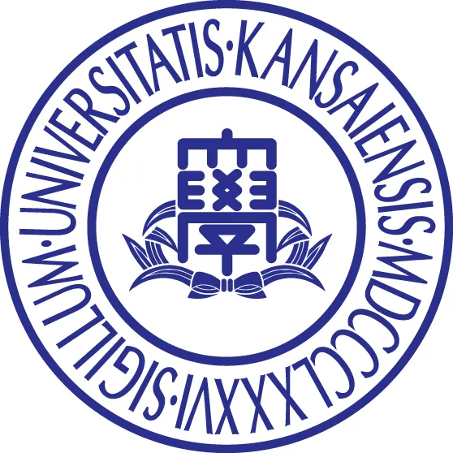
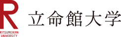
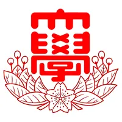
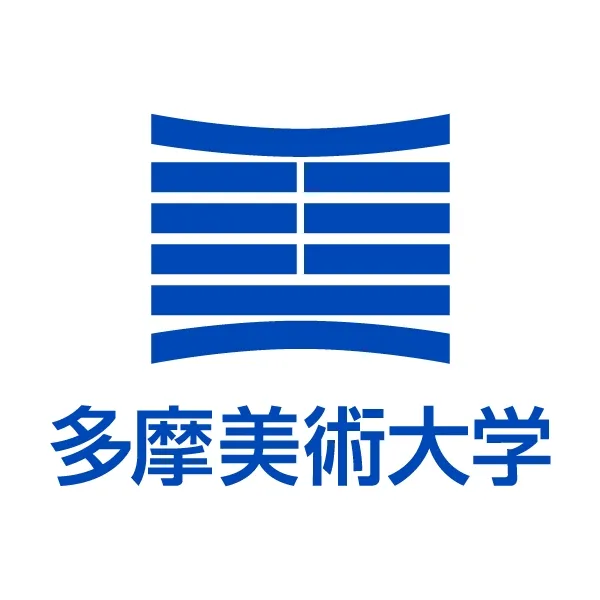
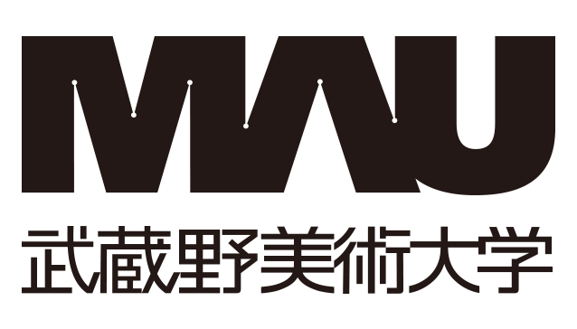
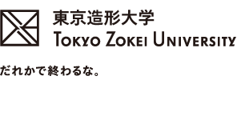

와세다대학교
와세다대학교 합격생 인터뷰
와세다 합격생이 전하는 일본 입시 준비와 공부 이야기를 들어봅니다.
유튜브에서 보기 (새 창)RESULTS & REVIEWS
대학별 합격 실적과 학생들의 준비 과정을 만나보세요.
01 / UNIVERSITIES
총 51명 합격
탄소쥬크 합격 실적

간사이대학교
리츠메이칸대학교문학부
니혼대학교문리학부
타마미술대학교정보디자인학과
무사시노미술대학교
도쿄조형대학교03 / INTERVIEWS
와세다대학교
와세다 합격생이 전하는 일본 입시 준비와 공부 이야기를 들어봅니다.
유튜브에서 보기 (새 창)와세다대학교 스포츠과학부
재학생에게 듣는 스포츠과학부의 특징과 입시·면접 경험.
유튜브에서 보기 (새 창)메이지대학교
군 복무 후 다시 도전해 메이지대학교에 합격한 준비 과정을 만나보세요.
유튜브에서 보기 (새 창)CONSULTATION
목표 학교와 현재 수준, 준비 일정을 함께 정리해 보세요.
최종 수정일: 2026.10.16